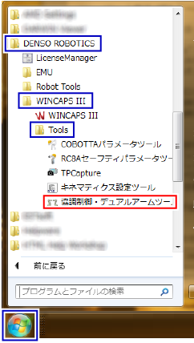
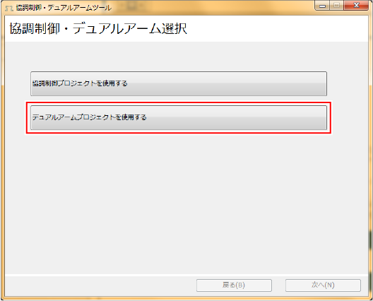
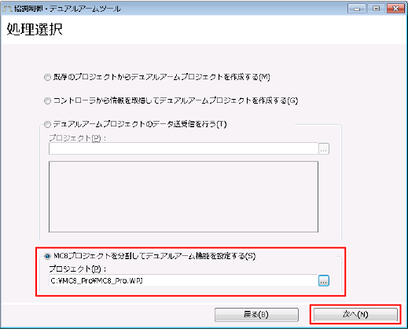
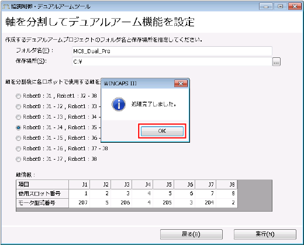
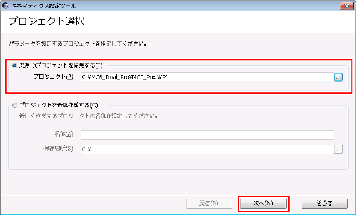

ID : 3332
MC8シリーズ制御ロボット × 2 (内部軸のみ)
この組合せでは、購入直後、MC8シリーズモーションコントローラ(以降 MC8シリーズ)には、MC8シリーズ1台分のデータ("プロジェクトデータ")しか入っていません。2つのロボットとして制御するには、1台分のプロジェクトデータを2つのプロジェクトデータに分ける必要があります。
2つのプロジェクトデータに分けるには、協調制御·デュアルアームツールを使用します。
ただし、2つに分けたプロジェクトデータは、内部軸を1軸ずつ単独で制御するデータになっています。
内部軸をロボットとして制御するためには、2つに分けたプロジェクトデータをロボット制御用に変換する必要があります。この変換には、キネマティクス設定ツールを使用します。
上記内容も含め、全体的なセットアップの手順を下記に示します。
| 実施項目 | 概要 |
|---|---|
| 1. 配線 | MC8シリーズに、内部軸のモータやティーチングペンダントなどを接続します。 |
| 2. ソフトウェアライセンスの登録 | MC8シリーズに、ソフトウェアライセンスを登録します。 |
| 3. プロジェクトデータの受信と分割 | MC8シリーズからプロジェクトデータを受信し、そのデータを分割します。 |
| 4. ロボット制御用のプロジェクトデータを変換 | キネマティクス設定ツールを使用して、ロボット制御用のプロジェクトデータに変換します。 |
| 5. プロジェクトデータの送信 | MC8シリーズへ2台分のプロジェクトデータを送信します。 |
以下、各実施項目について説明します。
1. 配線
MC8シリーズに、内部軸のモータや、ティーチングペンダント、電源ケーブルなど、必要な機器を接続します。
"システム構成"の"MC8シリーズ制御ロボット × 2 内部軸のみ"を参考にして、実施してください。
2. ソフトウェアライセンスの登録
MC8シリーズにあらかじめソフトウェアライセンスが登録されている場合は、次の"プロジェクトデータの受信と分割"にお進みください(ソフトウェアライセンスが登録済みのMC8シリーズを購入した場合など)。
まだ、ソフトウェアライセンスが登録されていない場合、MC8シリーズにティーチングペンダントを接続して、デュアルアーム制御用ライセンスを登録します。必要に応じ、キネマティクス機能のライセンスや、その他のライセンスも登録します。
登録方法については、"ティーチングペンダント操作ガイド"の"機能拡張画面の表示、追加/削除"を参照してください。
3. プロジェクトデータの受信と分割
プロジェクトデータの受信には、WINPCAPSIIIを使用します。また、受信したデータの分割には、協調制御·デュアルアームツールを使用します。協調制御·デュアルアームツールは、WINCAPSIIIをインストールするときに、同時にインストールされるソフトウェアです。
次のステップで行います。
1
MC8シリーズからプロジェクトデータを受信します。
具体的には、WINCAPSIIIで新規プロジェクトを作成する際、作成方法として"コントローラから情報を取得して新規作成"を選択して作成すると、MC8シリーズからプロジェクトデータを受信し、そのデータを新規プロジェクトデータとして保存します。
操作方法については、"WINCAPSIIIガイド"の"プロジェクトの新規作成"を参照してください。
2
協調制御·デュアルアームツールを起動します。
操作経路：PC[スタート]ボタン - [すべてのプログラム] - [DENSO ROBOTICS] - [WINCAPSIII] - [Tools] - [協調制御·デュアルアーム] |

3
"デュアルアームプロジェクトを使用する”を選択します。

4
"MC8プロジェクトを分割してデュアルアーム機能を設定する"を選択して、"プロジェクト"欄に先ほど新規作成したプロジェクトデータのプロジェクトファイル(拡張子 : wpj)を入力します。プロジェクトファイルは、その格納場所を絶対パスで入力してください。
その後、[次へ]をクリックします。
なお、ここで指定したプロジェクトデータ自身は分割せず、分割したプロジェクトデータを別のプロジェクトデータとして保存します。

5
分割後のプロジェクトデータについて、フォルダ名と保存場所を入力します。
次に、軸の分割方法を選択します。例えば、4軸ロボット2台を制御する場合は、
- "Robot0 : J1 - J4 , Robot1 : J5 - J8"
を選択します。

使用する軸の数が8より少ない場合は、Robot0に使用する軸の数に着目します。例えば、Robot0は3軸ロボット、Robo1は4軸ロボットとしたい場合、Robot0は3個の軸を使用するので、
- "Robot0 : J1 - J3 , Robot1 : J4 - J8"
を選択します。この場合、8軸目は無視されます。
また、Robot0やRobot1に付加軸も含めたい場合も、Robot0に使用する軸の数に着目します。例えば、Robot0は4軸ロボット + 1つの付加軸、Robo1は3軸ロボットとしたい場合、Robot0は合計5個の軸を使用するので、
- "Robot0 : J1 - J5 , Robot1 : J6 - J8"
を選択します。
軸の分割方法を選択した後、[実行]をクリックします。
6
プロジェクトデータの分割処理は数秒かかるので、下図のような終了メッセージが表示されるまで、しばらくお待ちください。
終了メッセージが表示されたら、[OK]をクリックして終了です。

4. ロボット制御用のプロジェクトデータを変換
ロボット制御用のプロジェクトデータを変換するには、キネマティクス設定ツールを使用します。キネマティクス設定ツールは、WINCAPSIIIをインストールするときに、同時にインストールされるソフトウェアです(詳細については、"MC8シリーズ(モーションコントローラ)取扱説明書"の"キネマティクス設定"を参照してください)。
Robot0もRobot1も、ロボットとして制御しない場合は、次の"プロジェクトデータの送信"にお進みください。
以下、ロボット制御用のプロジェクトデータへ変換する手順です。
1
キネマティクス設定ツールを起動します。
操作経路：PC[スタート]ボタン - [すべてのプログラム] - [DENSO ROBOTICS] - [WINCAPSIII] - [Tools] - [キネマティクス設定ツール] |

2
"既存のプロジェクトを編集する"を選択し、先ほど分割したRotot0とRobot1のプロジェクトデータの内、ロボット制御用に変換したい方のプロジェクトファイル(拡張子 : wpj)を、"プロジェクト"欄に入力します。プロジェクトファイルは、その格納場所を絶対パスで入力してください。
なお、プロジェクトデータのフォルダ構造については、"デュアルアーム制御用プロジェクトの概念"を参照してください。
また、Rotot0とRobot1の両方をロボット制御用に変換する場合は、1つずつ変換してください。

[次へ]をクリックすると、ロボット形状の選択ウィンドウやアーム長の設定ウィンドウが順に表示されますので、ウィンドウの内容に従って、設定してください。
3
最後に、”完了”ウィンドウが表示されるので、そのウィンドウを閉じて終了です。
5. プロジェクトデータの送信
プロジェクトデータを送信します。送信方法は、"プロジェクトデータの送受信"を参照してください。
実際に動作させるためには、各種パラメータの設定が必要です。設定の考え方は付加軸を扱う時と同じですので、"付加軸取扱説明書"の"付加軸立上げ手順(ボールねじ)"を参考にして設定してください。
ID : 3332